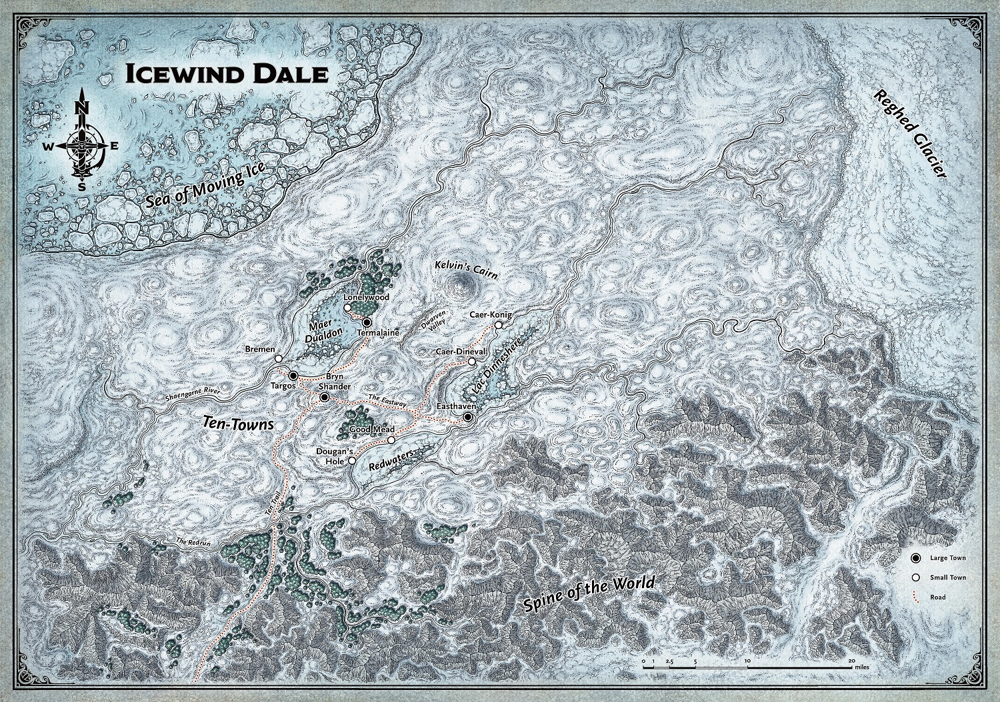
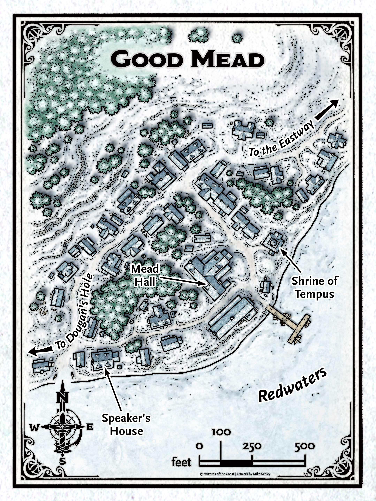

Icewind Dale: King of the Wolves¶
Introduction¶
The adventure will take place around Good Mead - a small town in Icewind Dale which produces mead from honey. Rumour has it some townsfolk have been murdered there recently.
It’ll be a pretty short adventure without much opportunity for personalised hooks, so create a level 5 character that has a reason to be in Good Mead and is motivated to help the people there.
Background¶
Icewind Dale¶
{kind=link}
Freezing wind sweeps across the tundra, ceaselessly battering anything that dares to grow or breathe in its domain. Even in summer, when the days stretch interminably long, the sun blazing low in the midnight sky brings no respite from the chill. Without fail, the wind finds its way through every chink and crack, every opening in the warmest furs, every tent flap, every roof and board ofthe strongest homes. It drains away any hint of warmth wherever it finds purchase.
The threat of winter’s fury is never far away. The wind sweeping down from the Reghed Glacier howls its wrath and sometimes carries stinging sprays ofice in its grasp. The sun never rises far above the horizon even at the height of summer — and the height of summer is fleeting. During the rest of the year sudden storms bring driving hail or sleet that leaves everything coated in a sheath ofice, or they bring snow that piles in deep drifts.
All this cold and fury is caged into one small region. The ice cliffs of the Reghed Glacier — the source ofthe never-ending wind — rises up in the east like prison walls, home to white dragons and enormous remorhazes. In the south loom the snow-capped peaks of the Spine ofthe World, crawling with orcs, goblins, and other monsters. North and west, the Sea of Moving Ice churns bergs and floes in an endless tumult, like winter grinding its teeth in anticipation of its next freezing assault.
And yet, such is the nature of life that even in this hostile place, it manages to lift its head in defiance ofthe biting cold. Lichens cling to weathered rock despite the battering ofthe winds, providing sustenance to herds of reindeer through the winter. Fish swim in the lakes and rivers that dot the tundra.
When summer comes to the tundra, life shakes off the torpor of winter and comes forth in full flower. Grasses grow two or three feet high in the span ofweeks. Birds flock to the marshes formed in the thawing soil. Reindeer calves fill out the herds that have been diminished through the winter.
Of course, no region ofthe Forgotten Realms is without its people. Human tribes follow the reindeer herds through their annual migrations. Other humans dare the treacherous waters ofthe Sea of Moving Ice in search offish, seals, and whales to sus tam them. Dwarves dig into the earth to find shelter from the biting wind, mining for iron and forging weapons and armor.
Most improbably of all, civilized folk descended from foolhardy and treasure-mad immigrants from the south manage to survive and sometimes thrive in ten small towns. The wooden buildings of these towns provide only a little shelter from the cold and wind, and no protection at all from the attacks of orcs, barbarians, or the fierce tundra yeti. Though the towns are clustered around three icy lakes teeming with knucklehead trout, resources are scarce, and competition between neighboring communi ties can be fierce and occasionally deadly. But for all the dangers, people still live in the region known as Ten-Towns, and new arrivals—outcasts, fugitives, wanderers, and adventurers—still come to test them- selves against the harshest environment known to the world.
This is Icewind Dale.
Ten-Towns¶

Who would choose to settle in a frontier land as brutal as Icewind Dale? The answers are as diverse as the people of Ten-Towns, who are a cross-section of the whole of the Forgotten Realms.
Some people come to Ten-Towns determined to make their fortunes. Although demand for knuckle-head scrimshaw in southern lands is not what it once was, there is still money to be made in fishing for the trout and selling or carving their ivory-like bones. The valley and the slopes of the Spine ofthe World are rich in mineral resources, as are the gem mines near Termalaine, so a few hopeful prospectors make their way to the far north in hopes of striking a rich new vein.
Still others come for the solitude. It is hard to get much farther away from the hustle and press of civilization than Icewind Dale — or closer to a particularly stark, harsh form of nature’s beauty. The dale is also a fine place to escape notice and stay out ofthe reach ofthe law ofthe southern cities. Like the famous drow Drizzt Do’Urden, many ofthe people who come to Icewind Dale are outcasts, fugitives, or pariahs in search ofa place where they can be tolerated, if not accepted.
Some ofthe people of Ten-Towns are descended from the Reghed barbarians who settled in Caer-Konig and Bremen for a time. They abandoned their ancient traditions and self-sufficient lifestyle after they were decimated by the armies of Akar Kessell a hundred years ago. Many of their kin still roam the tundra, but Caer-Konig and Bremen in particular have significant populations ofexceptionally tall men and women descended from the Reghed tribes.
Of course, now—four hundred years after the Dinev family first settled on the shores of Lac Diimeshere — most ofthe people ofTen-Towns are here because they were born here, grew up here, and never really considered leaving. They’re accustomed to the cold, and they smile behind their hands at — or openly mock — the weak southern folk who visit their homeland and complain about the weather. Like the hardy lichens and determined reindeer ofthe tundra, residents make a living under the shadow of Kelvin’s Cairn, hunker down to endure the brutal winters, and bring a zesty lust for life to the summers, enjoying what respite they can from the bitter cold.
Life in Ten-Towns is hard work. The people know the value of cooperation, and neighbors within a town depend on each other every day for survival. A pair of strong hands is too valuable a resource to waste, so when criminals are caught and brought to justice, they’re not locked up — they’re put to work for the common good.
The friendliness that suffuses each town often stops at the edge ofthat community. The people of other towns aren’t neighbors; they’re competitors for resources.
Good Mead¶
{kind=link}
Dark gray skies hang over Icewind Dale. Good Mead is on the frozen shore of Redwaters. The settlement clings to a slope by the water’s edge, its buildings hidden behind tall pines. A timber mead hall overlooks the lake, and thick woods to the west stretch away into the mist. Smoke rises from the chimneys, but the streets are mostly empty. Judging by the voices drifting from the hall, a town meeting could be in progress.
Hooks¶
Here are some suggested hooks. Feel free to use these or come up with your own.
Bounty Hunters¶
The murders have shocked Ten Towns, and its speakers have joined forces to place a bounty on the killer’s head. Despite the worsening weather, sellswords have spread out over the dale. Either by chance or deduction, the characters are the first among them to head for Redwaters. A purse of 300 gp is on offer for bringing down the killer, or double that if he or she can be brought alive to stand trial in Bryn Shander.
Caravan Guards¶
Good Mead’s speaker has ordered in extra supplies before the weather closes in. The party is hired to escort a wagonload of wicker hives to the beekeepers of Good Mead. With a killer on the loose, they’re urged to remain especially vigilant.
Old Friends¶
An old friend has retired to Good Mead: perhaps a mentor to one of the characters or a close relative. Word has come that this important person is in ill health and might not last the winter, so the characters have taken the opportunity to pay a final visit.
Player Responsibilities¶
Be responsive. We’ll use discord, so install it on your phone and turn push notifications on. If I message you on a platform other than discord about D&D, this is a sign you are not being appropriately responsive. If you usually have push notifications turned off because you don’t want to be spammed by the other servers you’re in, it’s quite easy to mute each of those servers.
Follow the advice here.
Take quick turns. Stop counting squares and just do it!
Character Creation¶
Golden Rules¶
Create a character that wants to be an adventurer.
Create a character that will be fun for the rest of the party to adventure with.
Pitch your character idea(s) to me early.
Ability Scores¶
We’ll roll for stats, details TBD.
Playable Races¶
Aasimar
Bugbear
Custom Lineage
Dragonborn
Duergar
Dwarf
Eladrin
Elf
Firbolg
Genasi
Gnome
Goblin
Goliath
Gothic Lineage (Dhampir, Hexblood, Reborn)
Half-elf
Half-orc
Halfling
Hobgoblin
Human
Kobold
Lizardfolk
Orc
Tiefling
Triton
Yuan-ti
Use the Monsters of the Multiverse version of a race if available. Let me know if there’s something else you really want to play.
Multiclassing¶
Sure, but note it’s probably a bad idea at level 5.
Backgrounds¶
Custom backgrounds are fine.
Innate Spellcasting¶
Pre-TcoE if a racial ability or feat let you cast a spell once per long rest, RAW you don’t count as knowing that spell and you cannot cast it with any spell slots you may have. Eg. Tiefling Infernal Legacy.
Post-TcoE this changed, allowing you to also cast the spell using any spell slots you may have. Eg. Fey Touched feat.
I would like to interpret all of these abilities in the post-TcoE way, so if you play a Tiefling you may also cast hellish rebuke using any spell slots you have.
Backstory¶
I’ll send you some Icewind Dale material for inspiration.
Alignment¶
I don’t care about alignment as long as it doesn’t conflict with the golden rules.
Bonus points if you read this hyper nerdy article and tell me which colors represent your character’s personality.
Miscellaneous¶
I’m generally happy to reskin things, eg. use half-orc mechanics to play a human barbarian.
All the optional stuff from TcoE is fine.
Content from Eberron and Critical Role is in general not allowed, let me know if there’s something you really want.
Don’t play something that will slow combat down, eg. micromanaging multiple units like summons.
Don’t play something that has lots of crazy random effects like rolling on d100 tables, eg. wild magic sorcerer.
Gameplay¶
Resting¶
Adventuring days will be pretty action-packed so we’ll go with rules-as-written.
Administering Potions¶
Using your action to administer a health potion to an unconscious creature requires going prone.
Prone¶
Standing up from prone triggers attacks of opportunity.
Concentration¶
It’s really hard for me to keep track of everyone’s concentration, so I’d like there to be some penalty for players forgetting to keep track over their own. I’ll remind you if I remember, but if we both forget and I remember later I’ll have you roll at disadvantage.
Spell Components¶
You can use a focus instead of any material components that don’t have cost requirements.
If you plan on having equipment in each hand (eg. shield + weapon, dual wield), I strongly recommend you take the Warcaster feat so we don’t have to track whether you have a free hand for somatic components.
Disarming¶
Not allowed because whatever you can do to enemies, they can do to you. It will be sad when goblins throw your magic sword in the lake.
Passive Ability Scores¶
The DC to hide/stealth is the opponent’s passive perception.
If your passive score meets the DC for a check you might automatically succeed after some period of time (depending on the task). Eg. if you spend 10 minutes trying to lift something heavy.
Falling Damage¶
Falling damage increased to 1d8 per 10ft, up to a maximum of 50d8 at 500ft.
You can make a Dexterity (Acrobatics) check to take half damage if you fall voluntarily.
Rolling Dice¶
Invalid Rolls¶
Rolls don’t count if:
you weren’t asked to roll
they fall off the table
Percentile Dice (d100)¶
PHB p6: “You generate a number between 1 and 100 by rolling two different ten-sided dice numbered from 0 to 9. One die (designated before you roll) gives the tens digit, and the other gives the ones digit. If you roll a 7 and a 1, for example, the number rolled is 71. Two Os represent 100.”